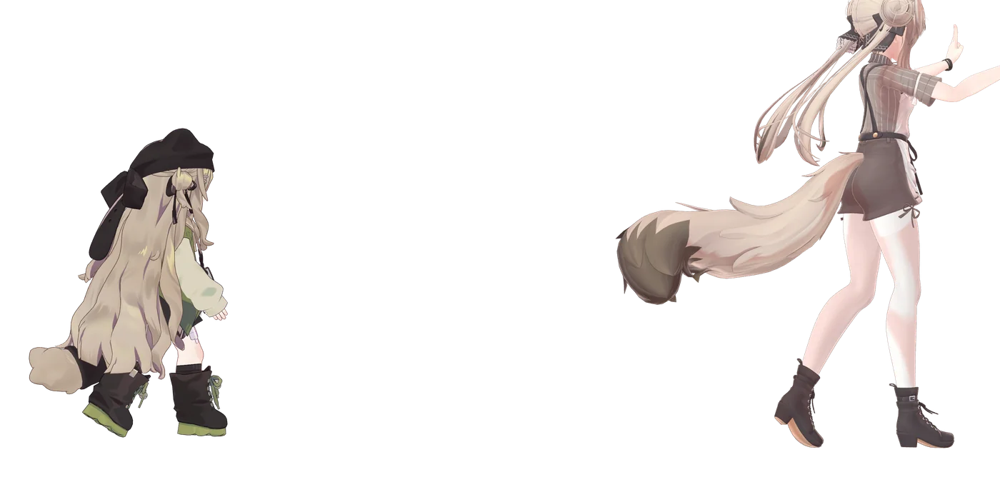
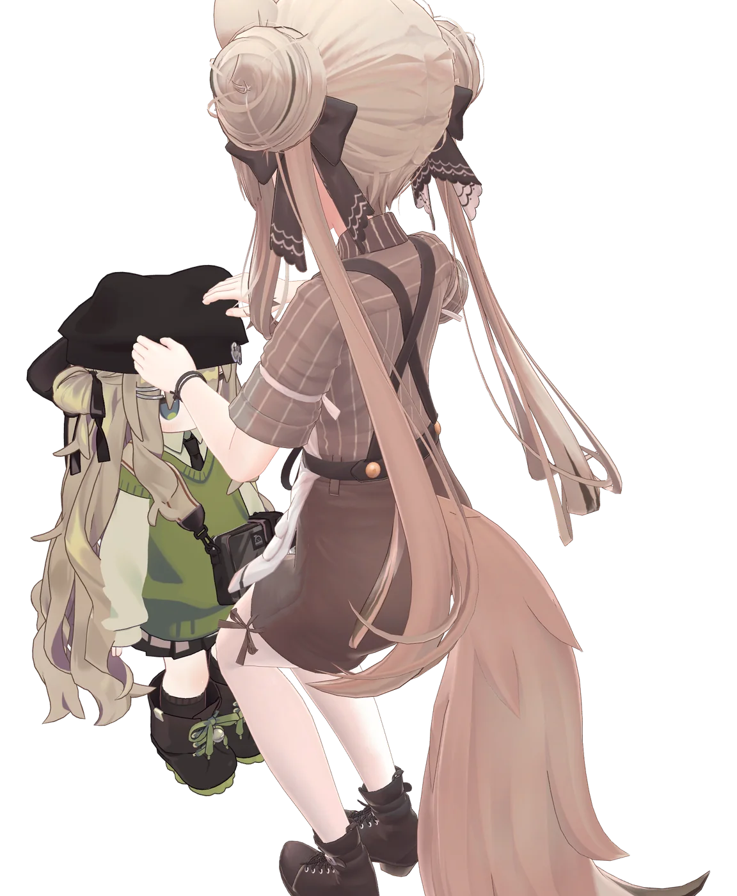
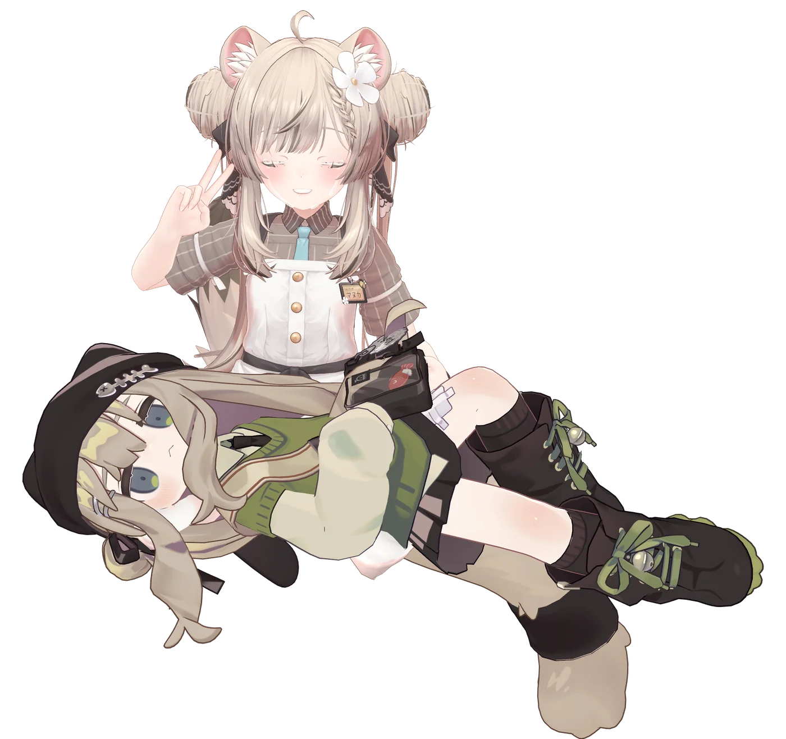

自分の足で歩く
歩き・ダッシュ・待機のモーションが自動で切り替わり、後ろを追従します。


あなたのアバターが、もう1体。自分の足で歩いて付いてきます。
いつも使っているアバターを、そのままペットにできます。あなたが歩けば歩き、離れれば駆け足になり、立ち止まればそばで待つ。浮かんでいるのではなく、脚を動かして付いてくるペットです。


歩き・ダッシュ・待機のモーションが自動で切り替わり、後ろを追従します。
モーションをペットのリグへ焼き込むので、Humanoid のモデルならどれでも脚が動きます。
Hierarchy のアバターでもプレハブでもペットにできます。着せ替えた今の見た目のままペットになります。
追従の距離は、大きさに合わせて自動で調整されます。
「お座り」でその場に留まります。向きも固定されます。
お座りで止めた場所と向きを、ほかの人の画面ともそろえられます（オプション）。後から Join した人にも、止めた場所に見えます。
メニューから高さ調整（上下 25cm）と、表示 / 非表示ができます。
「ペッターを取り外す」で、セットアップ前へ戻せます。ホバーモード（浮遊）と板状（平面）のモデルにも対応します。